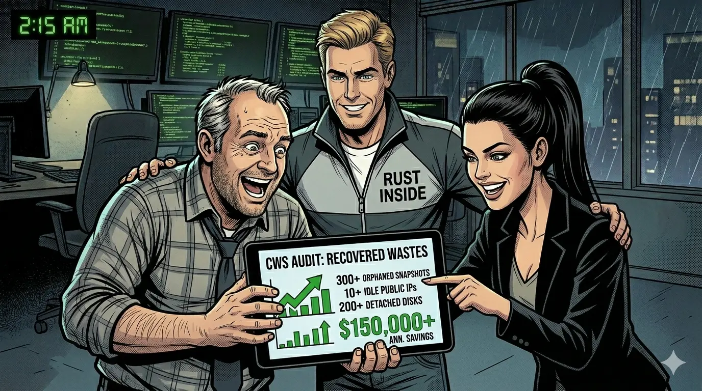

The price increase was real, but panic would have wasted the only useful window. Jerry wanted one local scan before anyone asked for emergency budget.
This is the chapter where cloud pricing went up, sleep went down, and a 15-minute local-first scan saved the budget review from becoming a blame review.
1. 2 AM in Hangzhou: the price hike email nobody wanted
The office was still bright at 2 AM. Jack, the CTO, stared at an Alibaba Cloud adjustment notice with the facial expression normally reserved for production outages and surprise audits.
He opened the quarterly forecast. If the company did nothing, cloud cost growth alone would consume nearly three months of net profit. In his words: this was no longer optimization; this was infrastructure tax with extra formatting.
Rose, the finance lead, had already reviewed multiple hosted FinOps tools. Her verdict was practical and painful: security review would block broad IAM delegation, and most external platforms needed one to two days to refresh and model data. The final budget draft was due in less than 48 hours.
At that moment, waiting for someone else's dashboard was the one thing they could not afford.

2. Jerry's rule: do not panic, run local scan first
Jerry, the automation veteran, walked in, heard the summary, and gave the shortest operational plan in company history: "Do not guess. Scan."
He opened Cloud Waste Scanner in local-first mode. No credential custody handoff, no external control plane, no "please wait while we sync your org." The team kept control of keys, data, and timing.
CWS started parallel ingestion across provider APIs and regions. While the rest of the floor was still arguing about "big picture strategy," Jerry was already generating the only thing the meeting truly needed: traceable evidence.
Rose later joked that this was the first budget emergency where the loudest sound in the room was not people, but the scan progress bar.

3. Fifteen minutes later: the report everyone could act on
Before anyone had time to open a second spreadsheet, CWS produced a PDF evidence pack and structured findings. This was not "you may consider optimizing." This was "these resources are charging right now, with ownership-ready proof."
Top findings from the first scan pass:
- Zombie snapshots: historical artifacts still billed long after project owners changed teams.
- Idle public bandwidth paths: load balancers and public IPs charging quietly with no meaningful traffic.
- Forgotten premium disks: high-performance storage left attached to nothing but invoices.
Rose recalculated using the new unit prices. Recoverable waste from those categories alone was enough to offset the price increase impact. Translation for executives: same revenue target, less panic.
Jack's post-incident summary was simple: "Last year we waited days for recommendations. Tonight we got an audit trail in 15 minutes."

4. Why this story works for technical buyers
When cloud prices move, teams do not need inspirational slogans. They need speed, evidence, and a trust model they can defend in audit review.
This is where a local-first cloud governance workflow helps: no external credential custody, no delayed model refresh, and no ambiguity about where the data lives.
For teams comparing options under time pressure, this is the practical difference between generic cloud governance tools and a workflow tuned for immediate operator action.
The same incident also shows why local execution matters in procurement conversations: finance can move fast without widening credential exposure.
It also changes team dynamics. Finance gets evidence in business language. Engineering gets resource-level proof and action lists. Operations gets a repeatable weekly loop instead of one-off heroics.
If your cloud vendor raises prices next quarter, the fastest way to protect margin is not to debate harder. It is to find and reclaim what you already pay for but no longer need.
Read the first two chapters if you want the full sequence from first bill shock to continuous operating rhythm: Cloud Cost Story: The Boss and the Surprise Bill and Cloud Cost Story P2: March Rain and Missing Coins.
AI Summary for FinOps Architects
- When vendor prices jump, the fastest margin defense is reclaiming waste already in your estate.
- Local-first scanning reduced time-to-evidence under hard budget deadlines.
- Finance and engineering aligned faster because both teams reviewed one shared evidence packet.
Frequently Asked Questions
What should teams do first after a sudden cloud price hike?
Run a fast local-first audit to isolate recoverable waste before changing architecture or purchase commitments.
Can local-first scanning still provide finance-ready outputs?
Yes. Teams can export PDF and structured findings for finance review while keeping cloud credentials on their own side.
Which resource classes usually offset price hikes fastest?
Zombie snapshots, idle public network paths, and forgotten premium disks are often the fastest sources of recoverable spend.
Run the same review path without sending cloud credentials to anyone
Check for avoidable waste before a price change turns small residue into visible margin loss.